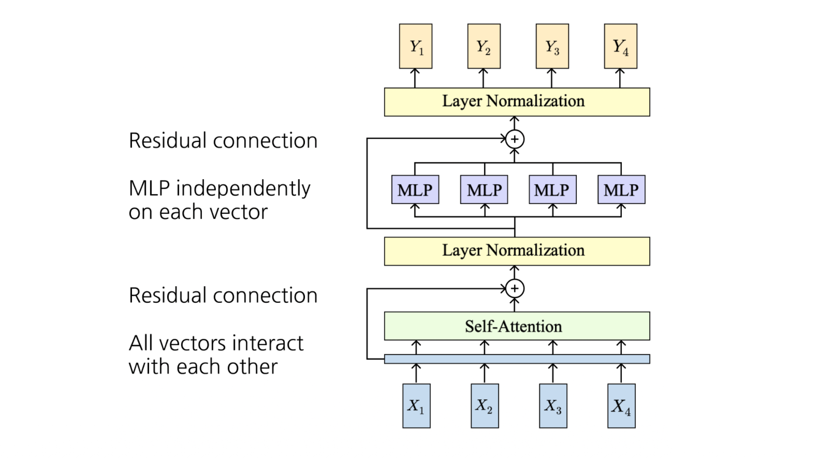

이번 글에서는 시퀀스(sequence) 데이터를 처리하는 신경망 구조를 역사적 발전 순서에 따라 정리합니다. 고정된 입력-출력만 다루던 피드포워드 신경망의 한계에서 출발하여, 순환 구조(RNN), 장기 의존성 문제를 해결한 LSTM, 그리고 순환을 완전히 제거하고 병렬화를 달성한 Attention과 Transformer까지 이어지는 흐름을 따라가 보겠습니다. 마지막에는 GPT-3, 텍스트 디코딩 알고리즘, RLHF까지 현대 대규모 언어모델(LLM)의 핵심 요소들도 함께 다룹니다.
1. 순환 신경망 (RNN)
1.1 왜 시퀀스 처리가 필요한가
기존의 피드포워드 신경망(Feedforward Neural Network)은 본질적으로 하나의 입력을 받아 하나의 출력을 내는(one-to-one) 구조입니다.
- 예: 이미지 분류 (Image → label)
하지만 현실의 많은 문제는 입력 혹은 출력의 길이가 가변적인 시퀀스입니다. RNN은 입력과 출력의 개수에 따라 다음과 같은 다양한 처리 방식을 포괄합니다.
- One to many: 이미지 캡셔닝 (Image → 단어 시퀀스)
- Many to one: 비디오 분류 (이미지 시퀀스 → label)
- Many to many: 기계 번역 (단어 시퀀스 → 단어 시퀀스)
- Many to many (per-frame): 프레임별 비디오 분류 (이미지 시퀀스 → label 시퀀스)

1.2 RNN의 핵심 아이디어
RNN의 핵심은 시퀀스가 처리되는 동안 갱신되는 내부 상태(internal state)를 갖는다는 점입니다. 벡터 시퀀스 \(x\)를 처리할 때, 매 시점(time step)마다 동일한 순환식(recurrence formula)을 적용합니다.
\[ h_t = f_W(h_{t-1}, x_t) \]
여기서 중요한 점은 모든 시점에서 동일한 함수 \(f_W\)와 동일한 파라미터 집합 \(W\)가 사용된다는 것입니다. 이 가중치 공유(weight sharing) 덕분에 RNN은 임의 길이의 시퀀스를 고정된 수의 파라미터로 처리할 수 있습니다.

1.3 Vanilla RNN (Elman RNN)
가장 기본적인 RNN은 상태가 단일 은닉 벡터 \(h\) 하나로 구성됩니다. 이를 Vanilla RNN 또는 Jeffrey Elman 교수의 이름을 따 Elman RNN이라 부릅니다.
\[ \begin{aligned} h_t &= \tanh\!\left(W_{hh}\, h_{t-1} + W_{xh}\, x_t + b_h\right) \\ y_t &= W_{hy}\, h_t + b_y \end{aligned} \]
각 항의 의미를 살펴보겠습니다.
- \(W_{hh}\): 이전 은닉 상태 \(h_{t-1}\)를 현재 상태로 전달하는 순환 가중치(hidden-to-hidden)
- \(W_{xh}\): 현재 입력 \(x_t\)를 은닉 공간으로 사상하는 입력 가중치(input-to-hidden)
- \(W_{hy}\): 은닉 상태로부터 출력을 만드는 출력 가중치(hidden-to-output)
- \(\tanh\): 비선형 활성화 함수로, 상태 값을 \([-1, 1]\)로 제한하여 안정적인 갱신을 돕습니다.
1.4 RNN 계산 그래프 (Computation Graph)
RNN을 시간축으로 펼치면(unroll) 하나의 큰 계산 그래프가 됩니다. 이때 동일한 가중치 행렬 \(W\)가 모든 시점에서 재사용된다는 점이 핵심입니다.
- Many to many: 각 시점 \(t\)마다 출력 \(y_t\)와 손실 \(L_t\)를 계산하고, 이를 모두 합쳐 전체 손실 \(L = \sum_t L_t\)를 구성합니다.
- Many to one: 마지막 은닉 상태 \(h_T\)로부터 단일 출력 \(y\)를 생성합니다.
- One to many: 단일 입력 \(x\)를 받아 매 시점 출력 \(y_t\)를 생성합니다.

Seq2Seq = Many-to-one + One-to-many
기계 번역과 같은 시퀀스-투-시퀀스(Seq2Seq) 구조는 두 단계의 결합으로 볼 수 있습니다.
- 인코더 (Many to one): 입력 시퀀스를 하나의 벡터로 압축합니다.
- 디코더 (One to many): 압축된 벡터로부터 출력 시퀀스를 생성합니다.
이때 인코더와 디코더는 서로 다른 가중치(\(W_1\), \(W_2\))를 사용합니다.
1.5 예시: 언어 모델링 (Language Modeling)
문자 단위 언어 모델링을 통해 RNN의 동작을 구체적으로 살펴보겠습니다. 문자 \(c_1, c_2, \ldots, c_{t-1}\)가 주어졌을 때 다음 문자 \(c_t\)를 예측하는 과제입니다.
- 학습 시퀀스: “hello”
- 어휘(Vocabulary): [h, e, l, o]
각 문자를 원-핫 벡터(one-hot vector)로 인코딩하여 입력합니다. 그러면 모델은 “h”가 주어지면 “e”를, “he”가 주어지면 “l”을, “hel”이 주어지면 “l”을, “hell”이 주어지면 “o”를 예측하도록 학습됩니다. 각 시점에서 출력층(output layer)의 점수가 가장 높은 문자가 타깃이 되도록 학습이 진행됩니다.

테스트 시점의 생성과 임베딩 층
- 테스트 시점(test-time)에는 한 번에 한 문자씩 샘플링하고, 그 결과를 다시 모델의 입력으로 되먹임(feed back)하여 새로운 텍스트를 생성합니다.
- 입력을 원-핫 벡터로 인코딩하면, 가중치 행렬과의 곱은 단지 가중치 행렬에서 하나의 열(column)을 추출하는 연산과 같습니다.
\[ \begin{bmatrix} w_{11} & w_{12} & w_{13} & w_{14} \\ w_{21} & w_{22} & w_{23} & w_{24} \\ w_{31} & w_{32} & w_{33} & w_{34} \end{bmatrix} \begin{bmatrix} 1 \\ 0 \\ 0 \\ 0 \end{bmatrix} = \begin{bmatrix} w_{11} \\ w_{21} \\ w_{31} \end{bmatrix} \]
- 이 점에 착안하여, 비효율적인 행렬곱 대신 별도의 임베딩 층(embedding layer)을 두어 해당 열을 직접 조회(lookup)하는 방식이 널리 쓰입니다.
1.6 시간 역전파 (BPTT)와 절단 역전파 (TBPTT)
BPTT (Backpropagation Through Time)
RNN의 학습은 시간 역전파(BPTT)로 이루어집니다.
- 순전파(forward): 시퀀스 전체를 통과시켜 손실을 계산합니다.
- 역전파(backward): 시퀀스 전체를 거슬러 그래디언트를 계산합니다.
- 문제점: 긴 시퀀스에서는 매우 많은 메모리가 필요합니다. 모든 중간 상태를 저장해 두어야 하기 때문입니다.
TBPTT (Truncated BPTT)
이 메모리 문제를 완화하기 위해 절단 시간 역전파(TBPTT)를 사용합니다.
- 시퀀스 전체가 아니라 작은 청크(chunk) 단위로 순전파와 역전파를 수행합니다.
- 은닉 상태는 시간축을 따라 계속 앞으로 전달(carry forward)하지만, 역전파는 일정한 스텝 수만큼만 수행합니다.
- 두 번째 청크의 순전파/역전파는 첫 번째 청크의 마지막 은닉 상태와 두 번째 청크 내부의 계산만으로 처리할 수 있습니다.
- 진행 순서: forward chunk 1 → backward chunk 1 → forward chunk 2 → backward chunk 2 → ⋯
- BPTT와의 차이: BPTT에서는 청크 1의 역전파가 청크 2로부터 오는 상류 그래디언트(upstream gradient)를 고려하지만, TBPTT에서는 청크 1의 역전파가 청크 2의 상류 그래디언트를 무시합니다.

1.7 RNN의 응용 예시
학습된 문자 단위 RNN은 다양한 텍스트를 생성할 수 있습니다.
- 셰익스피어 소네트 학습: 학습 초기에는 의미 없는 문자열을 뱉지만, 학습이 진행될수록(“train more”) 점점 문법적이고 그럴듯한 영어 문장을 생성하게 됩니다.
- C 코드 생성: 리눅스 커널 소스로 학습하면 들여쓰기, 중괄호, 주석(
/* ... */), 함수 호출 등 코드의 구조적 패턴까지 흉내 냅니다.
이미지 캡셔닝 (Image Captioning)
RNN을 CNN과 결합하면 이미지를 입력받아 설명 문장을 생성할 수 있습니다.
- CNN으로 이미지에서 특징 벡터 \(v\)를 추출합니다.
- 기존 순환식에 이미지 특징 항 \(W_{ih} v\)를 추가합니다.
\[ \underbrace{h_t = \tanh\!\left(W_{hh} h_{t-1} + W_{xh} x_t + b_h\right)}_{\text{Before}} \;\;\longrightarrow\;\; \underbrace{h_t = \tanh\!\left(W_{hh} h_{t-1} + W_{xh} x_t + W_{ih} v + b_h\right)}_{\text{Now}} \]
<START>토큰으로 시작하여 단어를 하나씩 샘플링하고,<END>토큰이 나오면 생성을 종료합니다.

<START>부터 시작해 “man”, “in”, “straw”, “hat” 등의 단어를 차례로 생성하며, 각 출력 단어가 다음 시점의 입력으로 되먹임됩니다. \(W_{ih} v\) 항이 추가됨으로써 언어 모델이 이미지 내용에 조건화됨을 강조합니다.- 성공 사례: “A cat sitting on a suitcase on the floor”, “A dog is running in the grass with a frisbee” 등 정확한 캡션을 생성합니다.
- 실패 사례: 거미줄을 보고 “A bird is perched on a tree branch”라고 오인하는 등, 학습 데이터의 편향이나 시각적 유사성 때문에 잘못된 캡션을 생성하기도 합니다.
2. LSTM (Long Short Term Memory)
2.1 Vanilla RNN의 그래디언트 흐름 문제
Vanilla RNN을 깊이 있게 학습하기 어려운 근본 원인은 그래디언트 흐름(gradient flow)에 있습니다.
먼저 순환식을 행렬 결합 형태로 다시 써 보겠습니다.
\[ \begin{aligned} h_t &= \tanh\!\left(W_{hh} h_{t-1} + W_{xh} x_t + b_h\right) \\ &= \tanh\!\left( \begin{pmatrix} W_{hh} & W_{hx} \end{pmatrix} \begin{pmatrix} h_{t-1} \\ x_t \end{pmatrix} + b_h \right) \\ &= \tanh\!\left( W \begin{pmatrix} h_{t-1} \\ x_t \end{pmatrix} + b_h \right) \end{aligned} \]
여기서 핵심은 \(h_t\)에서 \(h_{t-1}\)로 역전파할 때마다 \(W\)(정확히는 \(W_{hh}^{\top}\))가 곱해진다는 사실입니다.
따라서 \(h_0\)에 대한 그래디언트를 계산하려면 \(W\)가 여러 번 반복적으로 곱해지고, \(\tanh\)의 미분도 반복적으로 곱해집니다. \(T\) 시점을 거슬러 올라가면 대략 \(W\)가 \(T\)번 곱해지는 셈이므로, \(W\)의 최대 특이값(largest singular value)에 따라 다음 두 가지 병리적 현상이 발생합니다.
- 최대 특이값 \(> 1\) → 그래디언트 폭발(exploding gradients): 그래디언트의 크기가 지수적으로 커집니다.
- 해결책 — 그래디언트 클리핑(Gradient clipping): 그래디언트의 노름이 너무 크면 스케일을 줄여줍니다.
grad_norm = np.sum(grad * grad)
if grad_norm > threshold:
grad *= (threshold / grad_norm)- 최대 특이값 \(< 1\) → 그래디언트 소실(vanishing gradients): 그래디언트가 지수적으로 작아져 장기 의존성을 학습하지 못합니다.
- 클리핑으로는 해결할 수 없으며, 아키텍처 자체를 바꾸어야(change architecture) 합니다. 이것이 바로 LSTM의 등장 동기입니다.
이 문제는 Bengio et al. (1994)와 Pascanu et al. (2013)에서 이론적으로 분석되었습니다.
2.2 LSTM의 구조
LSTM은 매 시점마다 두 개의 벡터를 유지합니다.
- 셀 상태(Cell state) \(c_t \in \mathbb{R}^H\): 장기 기억을 담당하는 “고속도로”
- 은닉 상태(Hidden state) \(h_t \in \mathbb{R}^H\): 외부로 노출되는 출력
그리고 매 시점마다 네 개의 게이트(gate)를 계산합니다.
\[ \begin{pmatrix} i_t \\ f_t \\ o_t \\ g_t \end{pmatrix} = \begin{pmatrix} \sigma \\ \sigma \\ \sigma \\ \tanh \end{pmatrix} \left( W \begin{pmatrix} h_{t-1} \\ x_t \end{pmatrix} + b_h \right) \]
\[ \begin{aligned} c_t &= f_t \odot c_{t-1} + i_t \odot g_t \\ h_t &= o_t \odot \tanh(c_t) \end{aligned} \]
여기서 \(\odot\)는 원소별 곱(element-wise product)입니다. 각 게이트의 역할은 다음과 같습니다.
- 입력 게이트(Input gate) \(i_t\) (\(\sigma\)): 셀에 쓸지(write) 여부를 결정합니다.
- 망각 게이트(Forget gate) \(f_t\) (\(\sigma\)): 셀을 지울지(erase) 여부를 결정합니다.
- 출력 게이트(Output gate) \(o_t\) (\(\sigma\)): 셀을 얼마나 드러낼지(reveal) 결정합니다.
- 게이트 게이트(Gate gate) \(g_t\) (\(\tanh\)): 셀에 얼마나 쓸지(how much to write), 즉 후보 값을 결정합니다.
세 게이트(\(i, f, o\))는 시그모이드를 거쳐 \([0,1]\)의 “문 열림 정도”가 되고, \(g\)만 \(\tanh\)를 거쳐 \([-1,1]\)의 후보 정보가 됩니다.

2.3 LSTM의 그래디언트 흐름: 핵심 직관
LSTM이 장기 의존성 문제를 해결하는 비결은 셀 상태의 갱신식 \(c_t = f_t \odot c_{t-1} + i_t \odot g_t\)에 있습니다.
- \(c_t\)에서 \(c_{t-1}\)로 역전파할 때 오직 망각 게이트 \(f\)와의 원소별 곱(element-wise multiplication)만 필요합니다.
- Vanilla RNN과 달리 가중치 행렬 \(W\)와의 행렬곱이 없습니다.
따라서 셀 상태를 따라 흐르는 그래디언트는 매 시점 동일한 \(W\)가 반복적으로 곱해지는 일이 없어, 방해받지 않는 그래디언트 흐름(Uninterrupted gradient flow!)이 보장됩니다.
- 이는 ResNet의 잔차 연결(residual connection)과 매우 유사한 구조적 원리입니다. 셀 상태가 일종의 항등 경로(identity path) 역할을 합니다.
- 그 중간 형태로 Highway Networks가 있는데, 게이트로 변환과 우회를 혼합합니다.
\[ \begin{aligned} g_t &= F(x, W_t) \\ y_t &= g_t \odot H(x, W_h) + (1 - g_t) \odot x_t \end{aligned} \]

2.4 다층 RNN (Multilayer RNNs)
성능을 높이기 위해 RNN을 여러 층으로 쌓을(stack) 수 있습니다. \(l\)번째 층의 갱신식은 다음과 같이 일반화됩니다.
\[ h_t^{l} = \tanh\!\left( W \begin{pmatrix} h_{t-1}^{l} \\ h_t^{l-1} \end{pmatrix} + b_h^{l} \right) \]
LSTM의 경우도 동일하게 층 인덱스 \(l\)을 붙여 확장합니다.
\[ \begin{pmatrix} i_t^{l} \\ f_t^{l} \\ o_t^{l} \\ g_t^{l} \end{pmatrix} = \begin{pmatrix} \sigma \\ \sigma \\ \sigma \\ \tanh \end{pmatrix} \left( W \begin{pmatrix} h_{t-1}^{l} \\ h_t^{l-1} \end{pmatrix} + b_h^{l} \right), \quad \begin{aligned} c_t^{l} &= f_t^{l} \odot c_{t-1}^{l} + i_t^{l} \odot g_t^{l} \\ h_t^{l} &= o_t^{l} \odot \tanh(c_t^{l}) \end{aligned} \]
핵심은 한 RNN 층의 은닉 상태 \(h_t^{l-1}\)가 다음 층의 입력으로 전달된다는 것입니다. 2-layer, 3-layer RNN 등으로 깊이를 늘릴 수 있습니다.
2.5 LSTM 관련 추가 주제
Neural Architecture Search (NAS)
- LSTM 셀 구조를 사람이 설계하는 대신, 강화학습으로 셀 구조 자체를 탐색할 수 있습니다 (Zoph and Le, ICLR 2017).
- 학습된 아키텍처(Learned architecture)는 LSTM보다 훨씬 복잡하고 비직관적인 연산 그래프를 갖습니다.
3. 어텐션 (Attention)
3.1 Seq2Seq의 병목(Bottleneck) 문제
RNN 기반 인코더-디코더 구조를 다시 보겠습니다.
- 인코더(Encoder): 입력 시퀀스 \(x_1, \ldots, x_T\)를 읽으며 은닉 상태를 갱신합니다. \[ h_t = f(x_t, h_{t-1}) \] 최종 은닉 상태가 전체 입력을 요약하는 단일 문맥 벡터(context vector)가 됩니다. \[ c = h_T \]
- 디코더(Decoder): 이 문맥 벡터로부터 출력 시퀀스를 생성합니다. \[ s_t = g(y_{t-1}, s_{t-1}, c) \]
여기서 근본적인 문제가 발생합니다.
- 전체 입력 시퀀스가 단 하나의 고정 크기 벡터 \(c\)로 압축되어야 합니다.
- 긴 시퀀스 → 정보 병목(information bottleneck)이 생깁니다.
- 디코더가 초기 토큰들에 직접 접근할 수 없습니다.
어텐션의 아이디어는 단순하면서도 강력합니다. 단일 문맥 벡터에 의존하는 대신, 디코더가 모든 인코더 상태를 되돌아볼(look back) 수 있게 하자는 것입니다.
3.2 Self-Attention 층
이제 어텐션을 입력 시퀀스 내부에 적용한 Self-Attention(자기 어텐션) 층을 정의하겠습니다.
입력
- 입력 벡터 \(X\) (형태: \(N_X \times D_X\))
- 키 행렬 \(W_K\) (형태: \(D_X \times D_Q\))
- 값 행렬 \(W_V\) (형태: \(D_X \times D_V\))
- 쿼리 행렬 \(W_Q\) (형태: \(D_X \times D_Q\))
계산 과정
각 입력 벡터로부터 쿼리(Query)·키(Key)·값(Value)을 만들어냅니다.
\[ \begin{aligned} Q &= X W_Q && (\text{형태: } N_X \times D_Q) \\ K &= X W_K && (\text{형태: } N_X \times D_Q) \\ V &= X W_V && (\text{형태: } N_X \times D_V) \end{aligned} \]
다음으로 쿼리와 키의 내적으로 유사도(similarity)를 계산합니다.
\[ E = \frac{Q K^{\top}}{\sqrt{D_Q}} \qquad (\text{형태: } N_X \times N_X) \]
- 여기서 \(\sqrt{D_Q}\)로 나누는 스케일링(scaling)은 매우 중요합니다. \(D_Q\)가 클수록 내적 값의 분산이 커져 소프트맥스가 극단적으로 뾰족해지고 그래디언트가 소실되기 때문에, 차원의 제곱근으로 나누어 분산을 안정화합니다.
그 다음 각 행(쿼리)에 대해 소프트맥스를 적용하여 어텐션 가중치(attention weights)를 얻습니다.
\[ A = \mathrm{softmax}(E, \, \dim = 1) \qquad (\text{형태: } N_X \times N_X) \]
마지막으로 가중치로 값 벡터를 가중합하여 출력 벡터를 만듭니다.
\[ Y = A V \qquad (\text{형태: } N_X \times D_V) \]
핵심 요약: 하나의 입력 벡터당 하나의 쿼리(One query per one input vector)가 생성되며, 각 출력은 모든 입력의 값을 어텐션 가중치로 가중합한 결과입니다.

3.3 순열 등변성 (Permutation Equivariance)
Self-Attention의 중요한 성질은 입력 벡터의 순서를 바꾸면 어떻게 되는가를 통해 드러납니다.
- LSTM이나 Vanilla RNN: 입력 벡터를 치환(permute)하면 출력 벡터가 크게 달라집니다. (순차적으로 상태를 누적하기 때문)
- Self-Attention 층: 입력을 치환하면,
- 쿼리와 키는 동일하되 순서만 치환됩니다.
- 유사도 \(E\)도 동일하되 치환됩니다.
- 어텐션 가중치 \(A\)도 동일하되 치환됩니다.
- 값 \(V\)도 동일하되 치환됩니다.
- 따라서 출력도 동일하되 치환됩니다.
결론적으로 Self-Attention 층은 순열 등변성(permutation equivariant)을 가지며, 본질적으로 벡터의 집합(set) 위에서 동작합니다.
3.4 위치 인코딩 (Positional Encoding)
순열 등변성은 양날의 검입니다. Self-Attention은 처리하는 벡터들의 순서를 전혀 알지 못합니다. 하지만 언어처럼 순서가 의미를 좌우하는 데이터에서는 위치 정보가 필수적입니다.
- 처리를 위치 인식(position-aware)하게 만들기 위해, 입력에 위치 인코딩(positional encoding)을 결합(concatenate)합니다.
- 위치 인코딩 함수 \(E\)는 학습되는 룩업 테이블(learned lookup table)일 수도 있고, 고정된 함수(fixed function)(예: 사인/코사인)일 수도 있습니다.
3.5 마스크드 Self-Attention (Masked Self-Attention)
- 언어 모델링(다음 단어 예측)에서는 각 위치가 미래의 단어를 미리 보면(look ahead) 안 됩니다.
- 이를 위해 미래 위치에 해당하는 유사도 \(E_{i,j}\)를 \(-\infty\)로 설정합니다. 그러면 소프트맥스를 거친 어텐션 가중치가 \(0\)이 되어 미래 정보가 차단됩니다.

3.6 멀티헤드 Self-Attention (Multihead Self-Attention)
- 단일 어텐션 대신 \(H\)개의 독립적인 어텐션 헤드(Attention Heads)를 병렬로 사용합니다.
- 입력을 \(H\)개로 분할(Split)하여 각 헤드가 독립적으로 어텐션을 수행한 뒤, 결과를 다시 연결(Concat)합니다.
- 각 헤드가 서로 다른 종류의 관계(문법적, 의미적 등)에 주목할 수 있어 표현력이 풍부해집니다.
4. 트랜스포머 (Transformer)
4.1 시퀀스를 처리하는 세 가지 방법
Transformer를 이해하기 전에, 시퀀스를 처리하는 세 가지 접근법을 비교해 보겠습니다.
- 순환 신경망 (RNN) — 1D 정렬된 시퀀스에서 동작
- (+) 이론적으로 긴 시퀀스에 강함: 길이 \(N\)에 대해 \(O(N)\) 연산·메모리
- (−) 병렬화 불가: 은닉 상태를 순차적으로 계산해야 함
- 1D 합성곱 (1D Convolution) — 다차원 격자에서 동작
- (+) 병렬 가능: 출력을 병렬로 계산 가능
- (−) 긴 시퀀스에 약함: 전체 시퀀스를 보려면 많은 conv 층을 쌓아야 함
- Self-Attention — 벡터의 집합에서 동작
- (+) 긴 시퀀스에 탁월: 각 출력이 모든 입력에 직접 의존
- (+) 고도로 병렬화 가능: 각 출력을 병렬로 계산
- (−) 비용이 큼: 길이 \(N\)에 대해 \(O(N^2)\) 연산, \(O(N)\) 메모리
Self-Attention은 RNN의 장기 의존성 강점과 CNN의 병렬성을 동시에 취하는 대신, 시퀀스 길이의 제곱에 비례하는 연산 비용을 지불합니다. 이 통찰이 바로 “Attention is all you need” (Vaswani et al., NeurIPS 2017)의 핵심입니다.
4.2 층 정규화 (Layer Normalization)
Transformer 블록을 정의하기에 앞서 층 정규화를 복습합니다. 벡터 \(h_1, \ldots, h_N \in \mathbb{R}^D\), 스케일 \(\gamma \in \mathbb{R}^D\), 시프트 \(\beta \in \mathbb{R}^D\)가 주어졌을 때:
\[ \mu_i = \frac{\sum_{j=1}^{D} h_{i,j}}{D} \in \mathbb{R} \]
\[ \sigma_i = \left( \frac{\sum_{j=1}^{D} (h_{i,j} - \mu_i)^2}{D} \right)^{\frac{1}{2}} \in \mathbb{R} \]
\[ z_i = (h_i - \mu_i) / \sigma_i \in \mathbb{R}^D \]
\[ \text{출력: } y_i = \gamma z_i + \beta \in \mathbb{R}^D \]
- \(\mu_i\), \(\sigma_i\)는 각 벡터(토큰) 내부의 특징 차원에 대해 계산됩니다. 즉 배치 정규화와 달리 배치 크기에 의존하지 않아 시퀀스 모델에 적합합니다.
- \(\gamma\), \(\beta\)는 학습 가능한 파라미터로, 정규화 후의 스케일과 위치를 복원할 자유도를 줍니다.
4.3 Transformer 블록
Transformer 블록은 벡터 집합 \(x\)를 입력받아 벡터 집합 \(y\)를 출력합니다. 구성 요소는 다음과 같습니다.
- Self-Attention: 모든 벡터가 서로 상호작용
- 잔차 연결(Residual connection) + Layer Normalization
- MLP: 각 벡터에 대해 독립적으로 적용
- 잔차 연결 + Layer Normalization
핵심 특징을 정리하면 다음과 같습니다.
- 벡터들 사이의 유일한 상호작용은 Self-Attention뿐입니다.
- Layer norm과 MLP는 각 벡터마다 독립적으로 동작합니다.
- 따라서 고도로 확장 가능(scalable)하고 병렬화 가능(parallelizable)합니다.
Transformer는 이러한 Transformer 블록을 여러 개 이어 붙인 시퀀스(sequence of transformer blocks)입니다. 원논문(Vaswani et al.)의 설정은 다음과 같습니다.
- 블록 수: 12개
- \(D_Q = 512\) (쿼리 벡터의 차원)
- \(H = 6\) (어텐션 헤드의 수)

4.4 전이 학습 (Transfer Learning)
Transformer의 진정한 위력은 전이 학습에서 발휘됩니다.
- 사전학습(Pretraining): 인터넷에서 방대한 텍스트를 수집하여, 거대한 Transformer를 언어 모델링 과제로 학습시킵니다.
- 미세조정(Fine-tuning): 사전학습된 Transformer를 자신의 NLP 과제에 맞게 추가로 학습시킵니다.
4.5 현대적 변형 (Tweaking Transformers)
원래의 Transformer 아키텍처는 놀라울 정도로 안정적으로 유지되어 왔지만, 현대 대규모 모델에서는 다음 변형들이 표준이 되었습니다.
- Pre-Norm
- RMSNorm
- SwiGLU
- Mixture of Experts (MoE)
이러한 변경들은 주로 학습 안정성, 최적화 효율, 파라미터 효율, 스케일링 거동을 개선합니다. 대부분의 현대 LLM은 여전히 Transformer 백본을 사용하되, 정규화·MLP 설계·희소 전문가 라우팅을 개선한 형태입니다.
Pre-Norm Transformer
- 기존 (Post-Norm) 블록:
x → Self-Attention → + → LayerNorm → MLP → + → LayerNorm - Pre-Norm 블록:
x → LayerNorm → Self-Attention → + → LayerNorm → MLP → +
잔차 형태로 비교하면 차이가 명확합니다.
\[ \text{Post-Norm: } y = \mathrm{LN}\big(x + F(x)\big) \qquad \text{Pre-Norm: } y = x + F\big(\mathrm{LN}(x)\big) \]
- 왜 Pre-Norm을 쓰는가?
- 정규화를 잔차 분기(residual branch) 내부로 이동시킵니다.
- 최적화와 깊은 모델 학습을 더 안정적으로 만듭니다.
- 직관: Pre-Norm은 잔차 연결을 통해 더 깨끗한 항등 경로(identity path)를 보존합니다. Post-Norm에서는 잔차 합 이후에 정규화가 끼어들어 항등 경로가 매 블록마다 변형되지만, Pre-Norm에서는 \(x\)가 변형 없이 끝까지 더해집니다.
RMSNorm
- 동기: LayerNorm은 평균을 빼고(mean-subtraction) 표준편차로 다시 스케일합니다. RMSNorm은 평균 빼기 단계를 제거하고, 오직 평균제곱근(root-mean-square)으로만 재스케일합니다.
- 더 단순하며, 실무에서 종종 약간 더 안정적이고 효율적입니다.
정의: \(x \in \mathbb{R}^D\)에 대해
\[ \mathrm{RMS}(x) = \sqrt{\frac{1}{D} \sum_{i=1}^{D} x_i^2 + \epsilon}, \qquad y_i = \frac{x_i}{\mathrm{RMS}(x)} \, \gamma_i \]
여기서 \(\gamma \in \mathbb{R}^D\)는 학습되는 스케일 파라미터입니다. LayerNorm과 나란히 비교하면:
\[ \text{LayerNorm: } z_i = \frac{x_i - \mu}{\sigma}, \; y_i = \gamma_i z_i + \beta_i \qquad \text{RMSNorm: } y_i = \frac{x_i}{\mathrm{RMS}(x)} \gamma_i \]
- 실무 포인트: 많은 현대 LLM은 Pre-Norm + RMSNorm 조합을 사용합니다.
SwiGLU
고전적 Transformer MLP: \(X \in \mathbb{R}^{N \times D}\)에 대해 \[ Y = \phi(X W_1) W_2, \qquad W_1 \in \mathbb{R}^{D \times 4D}, \; W_2 \in \mathbb{R}^{4D \times D} \]
SwiGLU MLP: 곱셈적 게이트를 도입합니다. \[ Y = \big( \mathrm{SiLU}(X W_1) \odot X W_2 \big) W_3, \qquad W_1, W_2 \in \mathbb{R}^{D \times H}, \; W_3 \in \mathbb{R}^{H \times D} \]
활성화 함수 정의: \(\phi\)는 relu, \(\mathrm{SiLU}(x) = x\,\sigma(x)\)
해석: SwiGLU는 단일 변환 \(\phi(X W_1)\)을 게이트 형태 \(\mathrm{SiLU}(X W_1) \odot X W_2\)로 대체하여, 네트워크가 특징을 곱셈적으로 변조(modulate)할 수 있게 합니다.
왜 효과적인가: 더 풍부한 게이팅 메커니즘이 종종 더 나은 최적화와 강한 표현력을 제공합니다.
파라미터 수를 표준 FFN과 비슷하게 유지하기 위해 보통 \(H = \frac{8D}{3}\)로 선택합니다.
Mixture of Experts (MoE)
- 아이디어: 단일 밀집(dense) MLP를 여러 개의 전문가(expert) MLP로 대체합니다.
- 라우터(router)가 각 토큰을 소수의 전문가에게만 보냅니다.
- 이로써 연산을 비례적으로 늘리지 않으면서 파라미터 수를 극적으로 증가시킬 수 있습니다.
\(E\)개의 전문가 \(\{\text{Expert}_1, \ldots, \text{Expert}_E\}\)가 있고 각 전문가가 MLP라고 합시다. 라우터는 점수를 계산합니다.
\[ r(x) \in \mathbb{R}^E \]
그리고 각 토큰마다 상위 \(A\)개의 전문가를 선택합니다 (보통 \(A \ll E\)). 출력은:
\[ y = \sum_{e \in \text{Top-}A} \alpha_e \, \text{Expert}_e(x) \]
- 왜 MoE인가?: 파라미터는 \(E\)에 비례하여 늘지만, 연산은 \(A\)에만 비례합니다 (\(A \ll E\)).
- 트레이드오프: MoE는 막대한 모델 용량을 제공하지만, 라우팅 복잡성, 부하 균형(load balancing) 문제, 분산 통신 오버헤드를 동반합니다.
4.6 Transformer의 스케일업
Transformer 아키텍처는 모델 크기를 키우는 데 매우 적합하여, 다음과 같이 점점 더 거대한 모델로 발전해 왔습니다.
| 모델 | 층 수 | Width | Heads | 파라미터 | 데이터 | 학습 |
|---|---|---|---|---|---|---|
| Transformer-Base | 12 | 512 | 8 | 65M | — | 8×P100 (12시간) |
| Transformer-Large | 12 | 1024 | 16 | 213M | — | 8×P100 (3.5일) |
| BERT-Base | 12 | 768 | 12 | 110M | 13GB | — |
| BERT-Large | 24 | 1024 | 16 | 340M | 13GB | — |
| XLNet-Large | 24 | 1024 | 16 | ~340M | 126GB | 512×TPU-v3 (2.5일) |
| RoBERTa | 24 | 1024 | 16 | 355M | 160GB | 1024×V100 (1일) |
| GPT-2 | 48 | 1600 | ? | 1.5B | 40GB | — |
| Megatron-LM | 72 | 3072 | 32 | 8.3B | 174GB | 512×V100 (9일) |
| Turing-NLG | 78 | 4256 | 28 | 17B | ? | 256×V100 |
| GPT-3 | 96 | 12288 | 96 | 175B | 694GB | ? |
층 수, width, 파라미터, 데이터가 함께 증가하는 일관된 추세를 확인할 수 있습니다.
4.7 GPT-3
- 175B 파라미터를 가집니다.
- 미세조정이 필요 없습니다(No fine-tuning).
- 입력과 출력이 모두 시퀀스입니다.
- Zero-shot / one-shot / few-shot 과제를 수행합니다.
- GPT-3는 자기회귀(autoregressive) 모델로, 토큰 \(t_1, \ldots, t_{i-1} \in T\)가 주어졌을 때 다음 토큰 \(t \in T\)를 예측합니다. \[ p(t \mid t_1, \ldots, t_{i-1}) \]
GPT-3 학습 (언어 모델링)
- 데이터셋의 텍스트 \([t_1, \ldots, t_n]\)을 GPT-3에 입력합니다.
- 그러면 GPT-3는 \([p_2, \ldots, p_{n+1}]\)을 출력합니다. 여기서 \(p_i\)는 \(t_1, \ldots, t_{i-1}\)이 주어졌을 때 \(i\)번째 토큰에 대한 예측 분포입니다. \[ p_i = p(t \mid t_1, \ldots, t_{i-1}) \]
- 출력 예측 \(p_2, \ldots, p_n\)과 정답 토큰 \(t_2, \ldots, t_n\) 사이의 교차 엔트로피 손실(cross-entropy loss)로 학습합니다.

4.8 자기회귀 모델의 텍스트 생성 (디코딩)
학습된 자기회귀 모델로부터 텍스트를 생성하는 다양한 디코딩 전략을 살펴보겠습니다.
그리디 탐색 (Greedy Search)
토큰 시퀀스 \([t_1, \ldots, t_n]\)과 길이 제한 \(L\)이 주어졌을 때:
ind = n으로 초기화합니다.- 인덱스를 갱신합니다:
ind ← ind + 1. - 그리디 생성: 매 시점 가장 확률이 높은 토큰을 선택합니다. \[ t_{\text{ind}} = \arg\max_{t \in T} p(t \mid t_1, \ldots, t_{\text{ind}-1}) \]
- EOS 토큰이 생성되거나
ind가 \(L\)에 도달할 때까지 반복합니다.
- 단점: 매 시점 국소적으로 최선을 택하므로 전역적으로 차선(suboptimal)인 해에 빠질 수 있습니다. 예를 들어 첫 단어에서 확률 0.5인 “nice”를 택하면, 확률 0.4인 “dog”를 택했을 때 이어지는 0.9의 고확률 경로(예: “dog has”, 결합확률 \(0.4 \times 0.9 = 0.36\))를 놓칠 수 있습니다.
빔 탐색 (Beam Search)
- 아이디어: 매 시점 모든 후보 시퀀스를 한 토큰씩 확장하고, 로그 확률이 가장 높은 상위 \(B\)개의 시퀀스만 유지합니다.
접두사 \([t_1, \ldots, t_n]\), 빔 폭 \(B\), 최대 길이 \(L\)이 주어졌을 때:
- 초기화: Beam \(= \{([t_1, \ldots, t_n], 0)\}\) (시퀀스, 로그 확률)
- 반복:
- 빔의 각 시퀀스 \(s\)에 대해 \(p(t \mid s)\;\forall t \in T\)를 계산합니다.
- 모든 후보를 확장합니다: \((s, \ell) \to (s + t, \ell + \log p(t \mid s))\)
- 확장된 시퀀스를 모두 풀(pool)에 모읍니다.
- 로그 확률이 가장 높은 상위 \(B\)개를 유지합니다.
- 모든 시퀀스가 EOS로 끝나거나 길이 \(L\)에 도달하면 멈춥니다.
- 확률이 가장 높은 시퀀스를 출력합니다.
- 장점(\(B=2\)의 예): 그리디 탐색보다 더 확률이 높은 시퀀스를 얻을 수 있습니다. 여러 경로를 동시에 추적하므로 국소 최적의 함정을 일부 피합니다.
Top-K 샘플링
- 결정론적 탐색은 텍스트가 단조롭고 반복적이 되기 쉽습니다. 다양성을 위해 샘플링을 도입합니다.
정수 \(K\), 토큰 시퀀스 \([t_1, \ldots, t_n]\), 길이 제한 \(L\)이 주어졌을 때:
ind = n으로 초기화합니다.- 인덱스를 갱신합니다:
ind ← ind + 1. - Top-K 토큰 찾기: \(t_{\text{ind}}\)에 대해 확률 상위 \(K\)개의 토큰 집합 \(T_{\text{top-}K}\)를 찾습니다.
- 다음 토큰 샘플링: \(T_{\text{top-}K}\) 안에서 예측 확률에 비례하여 \(t_{\text{ind}}\)를 샘플링합니다.
- EOS가 나오거나
ind가 \(L\)에 도달할 때까지 반복합니다.
- 한계: 분포가 평평할 때(\(K=6\) 예시에서 “The” 다음 상위 6개 합이 0.68)는 적절하지만, 분포가 뾰족할 때(“The car” 다음 상위 6개 합이 0.99)는 굳이 6개를 다 고려할 필요가 없어 부적절할 수 있습니다. 즉 고정된 \(K\)가 문맥마다 적절하지 않다는 문제가 있습니다.
뉴클리어스 샘플링 (Nucleus Sampling, Top-p)
- Top-K의 고정 \(K\) 문제를 해결하기 위해, 누적 확률 임계값 \(\eta\)를 사용해 후보 개수를 동적으로 정합니다.
임계값 \(\eta\), 토큰 시퀀스 \([t_1, \ldots, t_n]\), 길이 제한 \(L\)이 주어졌을 때:
ind = n으로 초기화합니다.- 인덱스를 갱신합니다:
ind ← ind + 1. - \(N\) 찾기: 상위 \(N\)개 토큰의 확률 합이 \(\eta\)를 넘는 가장 작은 \(N \in \mathbb{N}\)을 찾습니다. \[ p(t_{\text{ind}} \in T_{\text{top-}N} \mid t_1, \ldots, t_{\text{ind}-1}) > \eta \]
- 다음 토큰 샘플링: \(T_{\text{top-}N}\) 안에서 예측 확률에 비례하여 \(t_{\text{ind}}\)를 샘플링합니다.
- EOS가 나오거나
ind가 \(L\)에 도달할 때까지 반복합니다.
- \(\eta = 0.92\)인 경우, 분포가 평평하면 자동으로 많은 토큰을 포함하고(예: “The” 다음 합 0.94), 분포가 뾰족하면 적은 토큰만 포함합니다(예: “The car” 다음 합 0.97). 이렇게 문맥에 따라 후보 집합 크기가 적응적으로 변하는 것이 핵심 장점입니다.
생성 결과 예시
- GPT-3는 사람이 작성한 입력 텍스트(bold)에 이어 매우 자연스러운 기사 본문(italics)을 생성할 수 있습니다. 예를 들어 가상의 “United Methodists Agree to Historic Split” 기사 제목과 부제만 주어도, 연도·교단 명칭·통계 수치 등을 포함한 그럴듯한 장문의 기사를 이어 씁니다.
4.9 인간 피드백 기반 강화학습 (RLHF)
언어 모델을 사람의 의도에 맞게 정렬(align)시키는 핵심 기법이 RLHF (Reinforcement Learning from Human Feedback)입니다. 세 단계로 이루어집니다.
- 언어 모델(LM) 사전학습: 대규모 텍스트로 기본 언어 모델을 학습합니다.
- 보상 모델(Reward Model) 학습: 프롬프트에 대한 여러 출력을 사람이 순위 매긴(ranked) 데이터를 모아, \(\{\)샘플, 보상\(\}\) 쌍으로 보상 모델 \(r_\theta\)를 학습합니다.
- 강화학습 미세조정: 학습된 보상 모델을 사용해 LM을 강화학습(예: PPO)으로 미세조정합니다.
- 강화학습 단계에서는 다음과 같은 목적을 최적화합니다. \[ \theta \leftarrow \theta + \nabla_\theta J(\theta) \]
- 이때 튜닝된 정책 \(\pi_{\text{PPO}}\)가 원래 모델 \(\pi_{\text{base}}\)에서 너무 멀어지지 않도록 KL 발산 페널티를 더합니다. \[ -\lambda_{\text{KL}} \, D_{\text{KL}}\big( \pi_{\text{PPO}}(y \mid x) \,\|\, \pi_{\text{base}}(y \mid x) \big) \] 이 KL 예측 시프트 페널티는 보상 해킹(reward hacking)을 막고 언어 능력을 보존하는 역할을 합니다.
- 10B+ 파라미터 전체를 미세조정하는 것은 비싸므로, LM의 일부 파라미터는 동결(frozen)한 채 학습하기도 합니다.

5. 마무리
이번 글에서는 시퀀스 모델링의 전체 발전 과정을 따라가 보았습니다.
- RNN은 내부 상태와 가중치 공유로 가변 길이 시퀀스를 다루었지만, 그래디언트 소실/폭발로 장기 의존성에 약했습니다.
- LSTM은 셀 상태와 게이트 메커니즘으로 방해받지 않는 그래디언트 흐름을 만들어 이 문제를 완화했습니다.
- Attention은 순환 구조를 제거하고, 모든 위치가 서로 직접 상호작용하는 순열 등변적 연산을 제시했습니다.
- Transformer는 Self-Attention, Layer Norm, MLP, 잔차 연결을 결합한 블록을 쌓아 고도로 병렬화 가능한 구조를 완성했고, Pre-Norm·RMSNorm·SwiGLU·MoE 등의 현대적 변형과 다양한 디코딩 전략, RLHF를 통해 오늘날의 LLM으로 이어졌습니다.
핵심을 한 문장으로 요약하면, “순차적 누적에서 병렬적 어텐션으로”의 전환이 현대 딥러닝 시퀀스 모델의 근간을 이루고 있다고 할 수 있습니다.